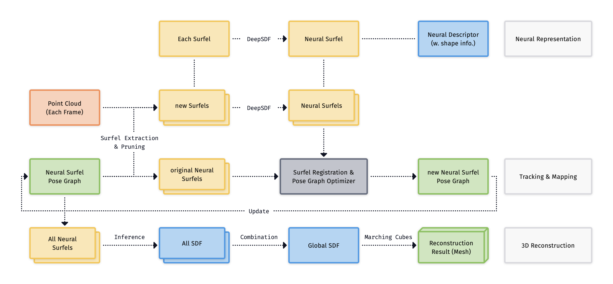
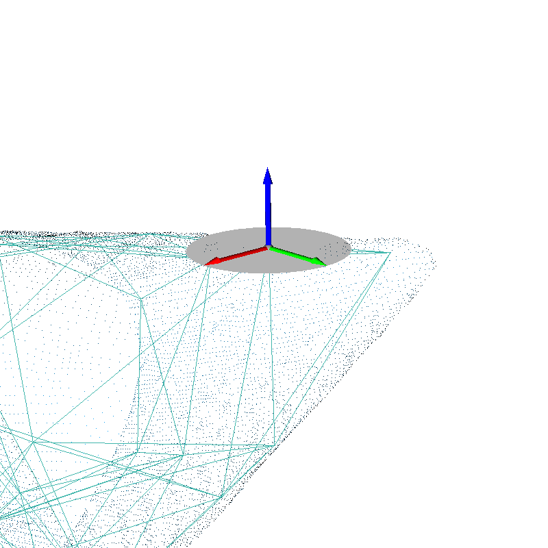
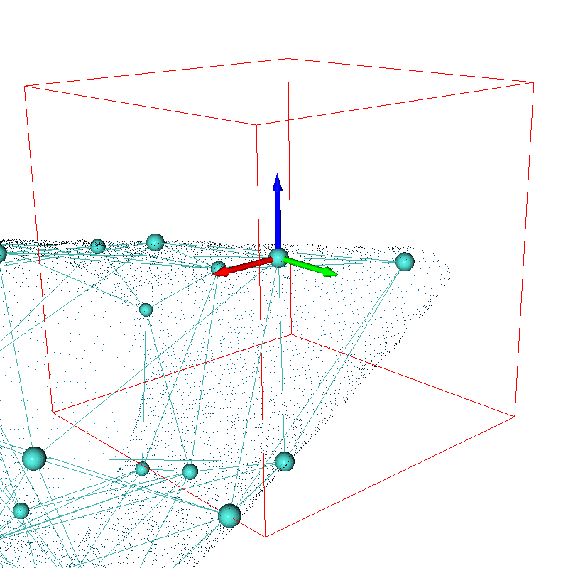
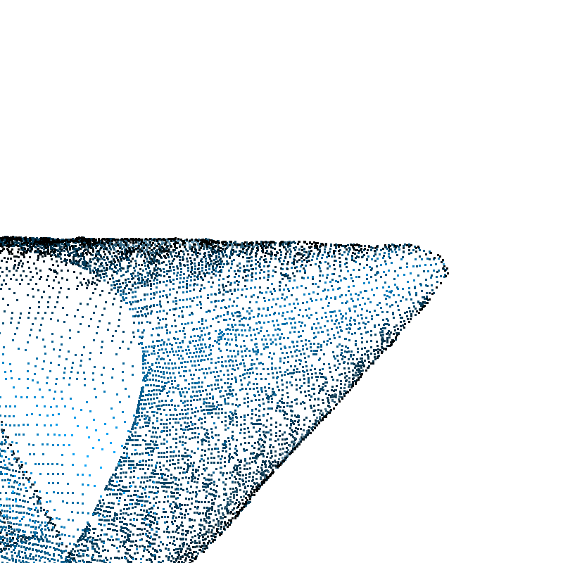

Abstract
Recently, implicit neural representation is a popular topic in 3D surface reconstruction. However, how to handle loop closure and bundle adjustment is a tricky problem for neural methods, because they learn the neural parameters globally. We present an algorithm that leverages the concept of surfels and expands relevant definitions to address such challenges. By integrating neural descriptors with surfels and framing surfel association as a deformation graph optimization problem, our method is able to effectively perform loop closure detection and loop correction in challenging scenarios. Furthermore, the surfel-level representation simplifies the complexity of 3D neural reconstruction. Meanwhile, the binding of neural descriptors to corresponding surfels produces a dense volumetric signed distance function (SDF), enabling the mesh reconstruction.
Overview

The system consists of three core modules: Neural Representation, Tracking and Mapping, as well as 3D Reconstruction. First, we extract the neural surfel with necessary pruning. Each surfel comes with a specified neural descriptor to represent its particular shape. Following this, the surfel pose graph optimization module is used to update the graph. Finally, all surfels’ SDF are fused to produce the final reconstruction mesh.
Neural Surfel




(a) A Traditional Surfel (b) A Neural Surfel (c) Point Cloud (d) Mesh Result
Compared to traditional surfels, our proposed neural surfels replace the basic disk (gray disk in the (a)) representation with a cubic voxel space (red box in the (b)) to store richer geometric information. Based on the point cloud within the voxel, our approach selects the coordinates of the point cloud that are connected to the surfel to learn neural latent codes and predict SDF values. Moreover, in traditional surfel reconstruction, not all surfels are used to constitute a deformation graph. However, in the definition of neural surfels reconstruction, all surfels are considered as graph nodes. (c) is the input point cloud, and (d) is the mesh result generated by our system.
Results

BibTeX
@article{cui2024neural,
title={Neural Surfel Reconstruction: Addressing Loop Closure Challenges in Large-Scale 3D Neural Scene Mapping},
author={Cui, Jiadi and Zhang, Jiajie and Kneip, Laurent and Schwertfeger, S{\"o}ren},
journal={Sensors (Basel, Switzerland)},
year={2024}
}